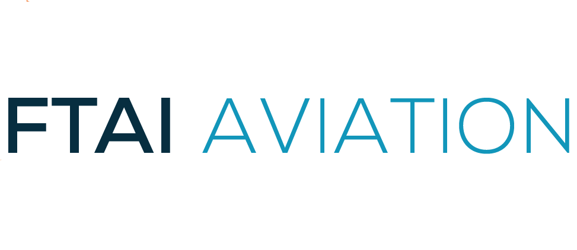

1
Map the support flow
Map induction-to-completion handoffs across Montreal, Miami, Rome, customer calls, work scopes, findings, deviations, and status reports.

Your MRE model depends on fast, clear technical updates across shops, customers, and internal teams. When volume rises, support systems need the same discipline as production.
Why we're here. Saw FTAI is hiring a Customer Support Engineer in Montreal. The role tracks shop visits, scope changes, deviations, and customer updates. That points to a support flow that is growing fast.
That support hire says FTAI is scaling shop-visit coordination, not just adding help desk capacity. The hard part is likely the handoff between engine status, work scopes, findings, deviations, customer questions, and MRO shop updates. If those updates live in separate tools, Remi's team loses time chasing facts. The business cost is slower decisions, stressed support staff, and less proof of the fast MRE promise.
Use a dedicated squad under Remi's product owner or PM. Keep the first pilot small: six weeks, weekly demos, and production-ready fixes for the support flow.
Map induction-to-completion handoffs across Montreal, Miami, Rome, customer calls, work scopes, findings, deviations, and status reports.
Unify shop status, deviation approvals, technical questions, and customer-ready updates so support engineers stop chasing spreadsheets.
Create regression tests for customer support workflows, integrations, and reporting paths before fixes reach shop teams or clients.
Add monitoring, audit trails, and exception views for MRE milestones, engine status, and repeated support causes.
Elinext is a full-cycle software development company, active since 1997, with about 700 in-house specialists and no freelancers. We build web, mobile, backend, QA, DevOps, data, and AI systems for clients across Europe, North America, Asia, the Middle East, and Australia. For a support-heavy aviation workflow, ISO 9001 and ISO 27001 matter because quality and data safety are part of the work. Our delivery history includes the companies below. That is why the squad above is built around stable delivery, test coverage, and clear handoffs.

Automated services cut manual labels and errors.
Read the case study